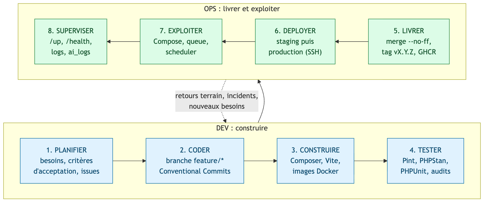
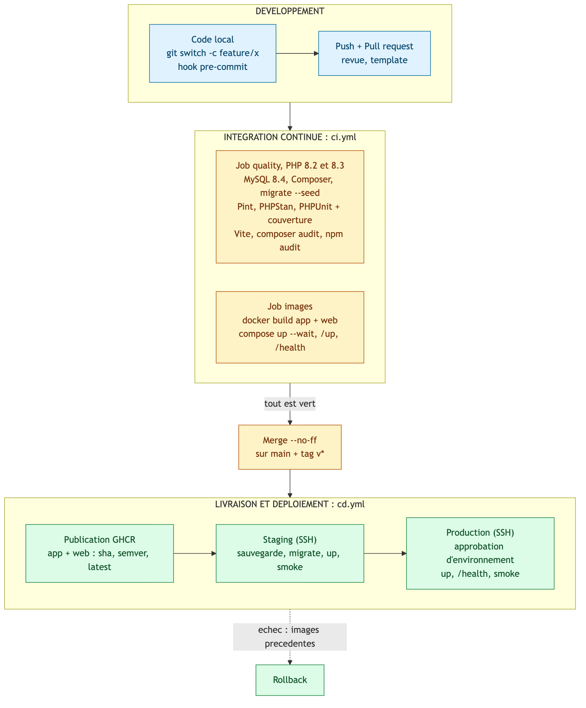
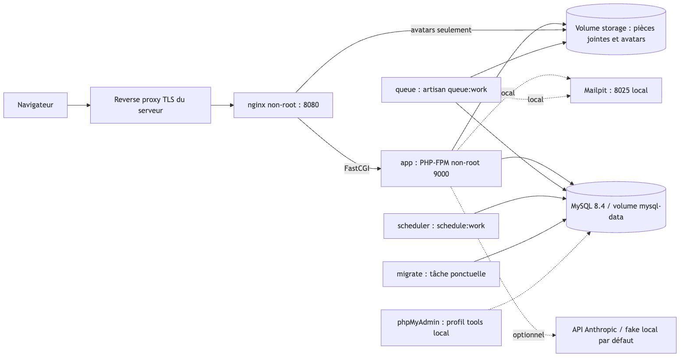

git log --graph --decorate --oneline -14.Application Laravel 12 de supervision d'un réseau d'eau
Processus DevOps · Pipeline CI/CD · Preuves d'exécution
Aziz Douagi — 5TWIN, ESPRIT
Version v1.1.0 · 1 novembre 2026
Dépôt : github.com/AzizDouagi/Esprit_twin3_Aqua
Ce document présente la démarche DevOps mise en place pour AquaSecure : un diagramme du processus DevOps, un pipeline allant du développement à l'intégration continue (CI) puis au déploiement (CD), et les preuves d'exécution obtenues dans le terminal.
| Besoin | Outil | Fichier du dépôt |
|---|---|---|
| Gestion de versions | Git, GitHub, branches par phase, tags v0.1.0 à v1.1.0 | .git, .github/PULL_REQUEST_TEMPLATE.md |
| Qualité locale | Hook pre-commit (Pint, PHPStan, tests) | .githooks/pre-commit |
| Intégration continue | GitHub Actions | .github/workflows/ci.yml |
| Conteneurisation | Docker multi-stage (cibles app et web), Docker Compose | Dockerfile, docker-compose.yml, docker-compose.prod.yml |
| Livraison | Publication des images sur GHCR | .github/workflows/cd.yml |
| Déploiement | SSH vers staging puis production, smoke tests, approbation d'environnement | .github/workflows/deploy.yml, scripts/ssh-deploy.sh |
| Maintenance | Dependabot, modèles d'issues, endpoints /up et /health | .github/dependabot.yml |

| Phase | Ce qui est fait dans AquaSecure |
|---|---|
| 1. Planifier | Besoins traduits en phases et critères d'acceptation, issues GitHub (modèles bug et fonctionnalité). |
| 2. Coder | Une branche par phase (feature/*, devops/*), commits au format Conventional Commits, tests écrits avec le code. |
| 3. Construire | composer install, npm run build (Vite), images Docker app (PHP-FPM, non-root) et web (Nginx). |
| 4. Tester | Laravel Pint, PHPStan/Larastan, PHPUnit (111 tests), composer audit, npm audit. |
| 5. Livrer | Merge --no-ff sur main, tag sémantique vX.Y.Z, images publiées sur GHCR avec les tags sha, semver et latest. |
| 6. Déployer | Staging puis production par SSH, avec la même image ; la production exige l'approbation de l'environnement GitHub. |
| 7. Exploiter | Compose : MySQL, application, Nginx, worker de file d'attente, scheduler Laravel, Mailpit. |
| 8. Superviser | Healthchecks /up et /health, logs applicatifs, journal ai_logs ; les retours alimentent la planification. |

ci.yml)Déclenchée sur chaque pull request, sur les push des branches feature/**, devops/**, docs/**, et appelée par la CD (workflow_call). Permissions minimales : contents: read.
| Job | Étapes |
|---|---|
| quality (matrice PHP 8.2 et 8.3, service MySQL 8.4) | composer validate --strict · composer install · migrate:fresh --seed · composer lint (Pint) · composer analyse (PHPStan) · php artisan test avec couverture clover/JUnit exportée en artefact · npm ci et npm run build · composer audit et npm audit · validation YAML, scripts shell et docker compose config |
| images | Build des cibles app et web · docker compose up --wait sur une base isolée · curl sur /up et /health · nettoyage des conteneurs |
cd.yml, deploy.yml)| Étape | Condition | Action |
|---|---|---|
| ci | push sur main ou tag v* | Réutilise ci.yml ; rien n'est publié si la CI échoue. |
| publish | après ci | Build et push de deux images vers ghcr.io : tags sha-…, semver et latest (sur tag). |
| staging | vars.DEPLOY_ENABLED == 'true' | Déploiement SSH : sauvegarde, migrations, up, smoke tests. |
| production | tag v*, après staging, approbation de l'environnement | Même image que staging ; up, /health, smoke tests. |
| rollback | échec de démarrage ou de smoke | Retour aux images précédentes ; le schéma de base de données est conservé, la compatibilité reste à vérifier. |
Secrets et variables GitHub à créer pour un déploiement réel : SSH_HOST, SSH_USER, SSH_PORT, SSH_PRIVATE_KEY, SSH_KNOWN_HOSTS, vars.DEPLOY_PATH, vars.DEPLOY_ENABLED.

app (utilisateur non-root, OPcache) et web (Nginx unprivileged).docker compose up --wait attend leur état sain.APP_DEBUG=false, aucun phpMyAdmin ni Mailpit, port publié sur 127.0.0.1 uniquement.Les commandes suivantes ont été lancées dans le terminal de la machine azizdouagi@MacBook-Pro-de-Aziz, dans le dossier du projet. Chaque capture reprend la commande saisie et la sortie réellement obtenue.
--no-ffgit log --graph --decorate --oneline -14.
ci.yml, cd.yml, deploy.yml).

docker compose config valide ; images aquasecure-web (83,1 Mo) et aquasecure-app (867 Mo) construites.
/up renvoie HTTP 200 et /health confirme l'état de la base de données.main
13d7ee3 (qui exécute la CI puis publie les images) est terminé avec succès ; les mises à jour Dependabot sont aussi vertes.13d7ee3 (capture 6).DEPLOY_ENABLED=true. Il est décrit et validé syntaxiquement, mais n'a pas été exécuté.| Exigence du sujet | Réalisation | Preuve |
|---|---|---|
| Diagramme du processus DevOps | Boucle en 8 phases Dev / Ops | Figure 1, section 2 |
| Pipeline développement → CI → CD | ci.yml, cd.yml, deploy.yml | Figure 2, section 3, capture 6 |
| Intégration continue | Pint, PHPStan, 111 tests, audits, build Vite et Docker | Capture 3 |
| Conteneurisation | Images app et web, Compose, healthchecks | Captures 4 et 5 |
| Workflow Git | Branches par phase, merges --no-ff, tags sémantiques | Captures 1 et 2 |
| Déploiement | SSH staging puis production avec approbation | Section 3.2 (non exécuté en réel) |